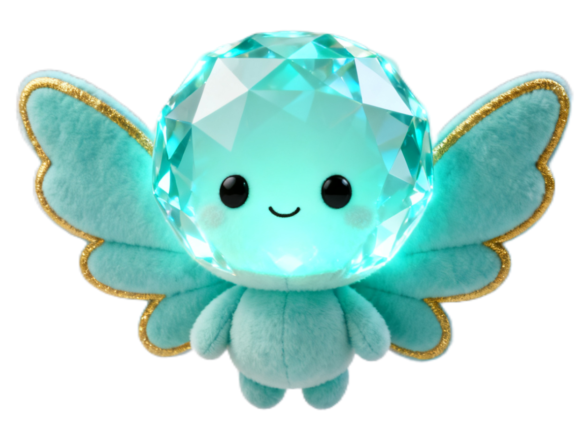

EL CENTINELA DEL RITMO
> Orion y la IA Mite han alcanzado el núcleo del Coliseo Virtual en Neon Nirvana. Frente a ellos se alza el impenetrable Cortafuegos Cinético.
> El sector está custodiado por el Centinela de la Frecuencia: una entidad colosal de luz sólida capaz de predecir y anular en nanosegundos cualquier trayectoria balística convencional o disparo de rifle.
> Para romper el algoritmo predictivo, no se necesita fuerza militar. Se necesita la única variable que la inteligencia artificial no puede predecir: el flow humano, la síncopa y el caos armónico de 1996.
ALIANZA SÓNICA CON MITE

"¡Orion! El Centinela tiene sus procesadores afinados para calcular balística lineal, pero no tiene ni un solo byte de datos sobre el funk noventero. Si ejecutamos la cadencia exacta de «Get Down» a 116 BPM, sus sensores de resonancia van a entrar en sobrecarga crítica."
"Yo desplegaré mi cámara holográfica para grabar tus pasos («● REC»). En cuanto juntemos suficiente flow, transmitiré la secuencia al Coliseo para abrir el Cortafuegos. ¡Pisa las flechas justo en los receptores y no pierdas el ritmo!"
¡FRECUENCIA SECUESTRADA!
> El Centinela de la Frecuencia ha colapsado ante la sobrecarga de síncopa funk. Los núcleos de luz sólida se disuelven en chispas de datos.
> La grabación de «El Bytestreet Boy de la Resistencia» resuena en las pantallas monumentales de Neon Nirvana. Millones de usuarios conectados a la Red ANIMA vitorean la hazaña.
> Mite ha instalado con éxito el Hiper-Lazo de Pandora. La frecuencia de la rebelión está asegurada para el siguiente paso del viaje.